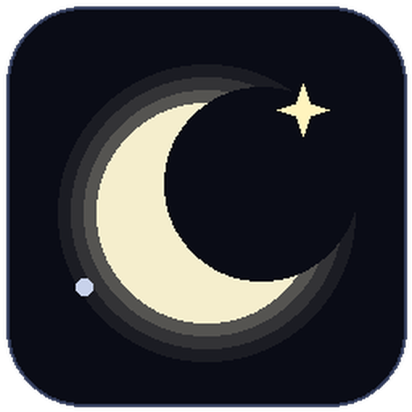
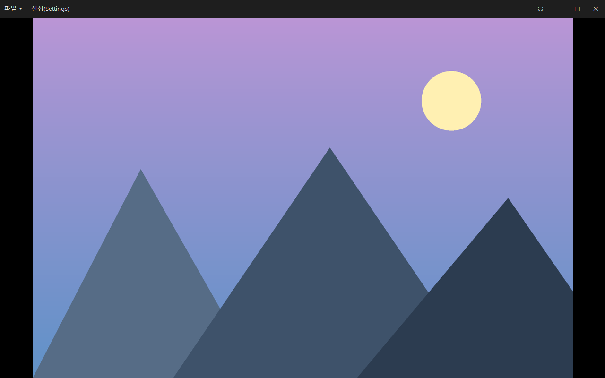
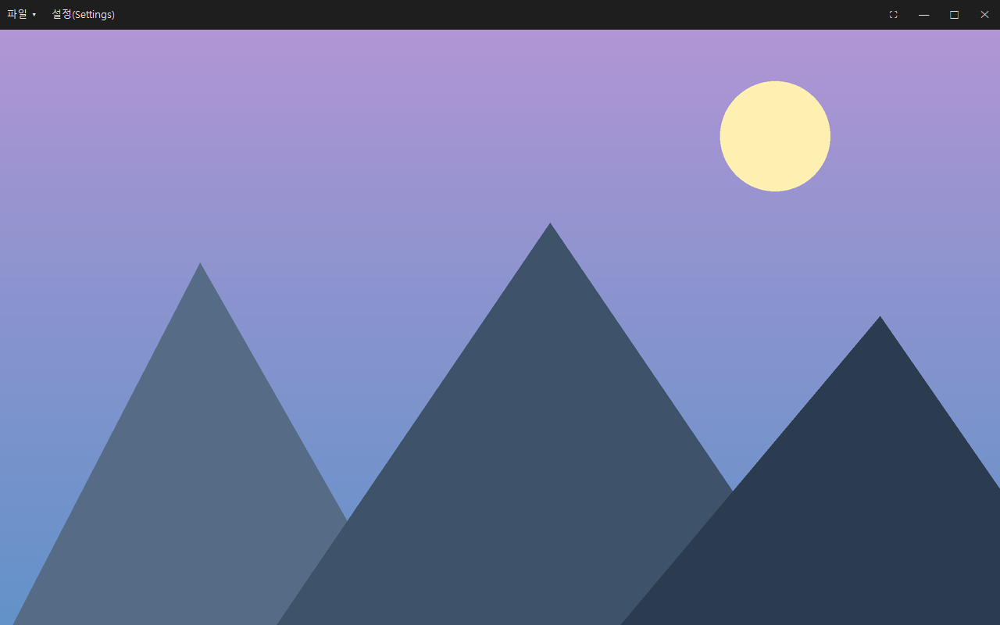
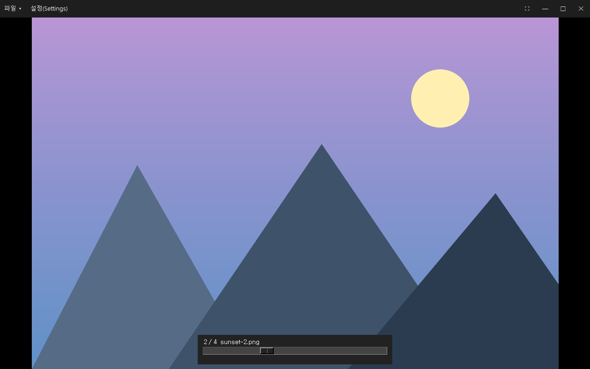
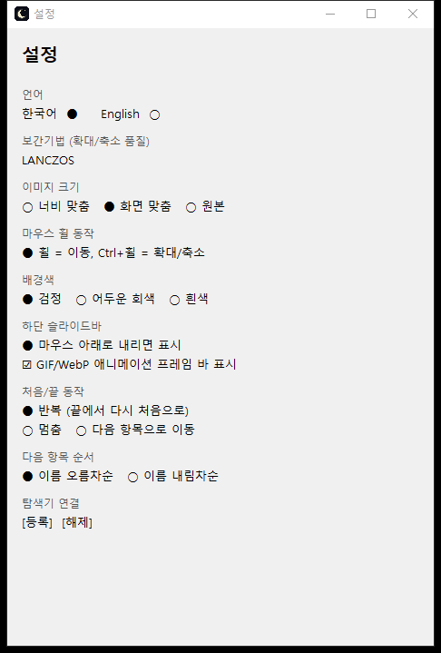

광고 없는 초경량 Windows 이미지 뷰어.
JPG·PNG·GIF·WebP·AVIF·TIFF·BMP를 열고, 만화책 CBZ·ZIP을 풀지 않고 바로 봅니다.
설치 없음 · 인터넷 연결 없음 · 약 15MB
전체화면으로 열리고, 조작할 때만 UI가 나타납니다.




이미지를 보는 일에만 집중할 수 있게 만든 뷰어입니다.
CBZ·ZIP을 풀지 않고 안의 이미지를 순서대로 넘깁니다. 폴더를 정리할 필요가 없습니다.
하나를 다 보면 자동으로 다음 항목으로 넘어갑니다. 폴더는 폴더끼리, 압축파일은 압축파일끼리 이어지고 섞이지 않습니다.
인터넷에 연결하지 않습니다. 계정도, 광고도, 사용 기록 전송도 없습니다.
압축을 풀고 EXE를 실행하면 끝. 레지스트리는 연결 프로그램으로 등록할 때만 건드립니다.
GIF·WebP 애니메이션을 재생하고, 하단 왼쪽 프레임 바에서 일시정지·프레임 이동을 합니다.
열람한 폴더·압축파일 목록에서 골라 휴지통으로 보냅니다. 드라이브 루트나 시스템 폴더는 막혀 있습니다.
Pillow가 지원하는 이미지 형식을 그대로 엽니다.
키보드와 마우스만으로 모든 동작을 합니다.
| 조작 | 동작 |
|---|---|
← → ↑ ↓ / WASD | 확대 상태에서 화면 이동, 끝에서 이전·다음 |
PageUp / PageDown | 이전 / 다음 |
Home / End | 처음 / 마지막 |
| 마우스 휠 | 설정에 따라 이전·다음 또는 확대·축소 |
Ctrl + 휠 | 설정에 따라 확대·축소 또는 이전·다음 |
9 / 8 / 0 | 화면 맞춤 / 너비 맞춤 / 원본 크기 |
| 더블클릭 | 화면 맞춤 ↔ 원본 크기 |
Alt+Enter | 전체화면 ↔ 창모드 |
Ctrl+O / Ctrl+S | 파일 열기 / 설정 |
L | 열람한 목록 |
Esc | 종료 |
Python이 필요 없습니다.
DalbitViewer-1.3.5-win64.zip을 받습니다.DalbitViewer\DalbitViewer.exe를 실행합니다.SmartScreen 경고가 뜨면 추가 정보 → 실행을 누르세요. 이미지 더블클릭으로 열리게 하려면 설정 → 탐색기 연결 → 등록을 한 번 실행합니다.